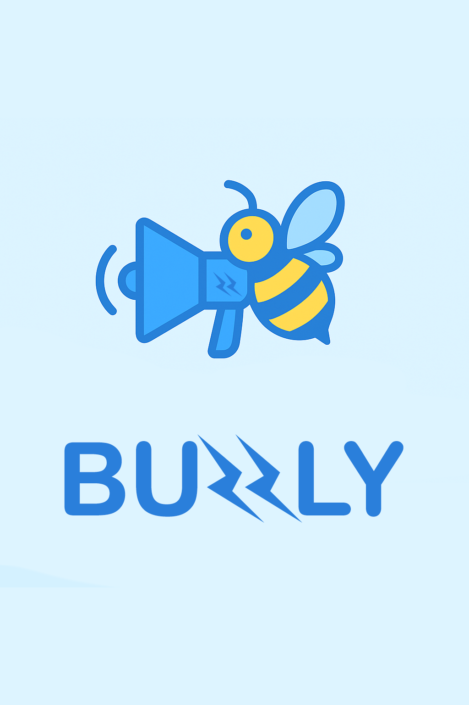
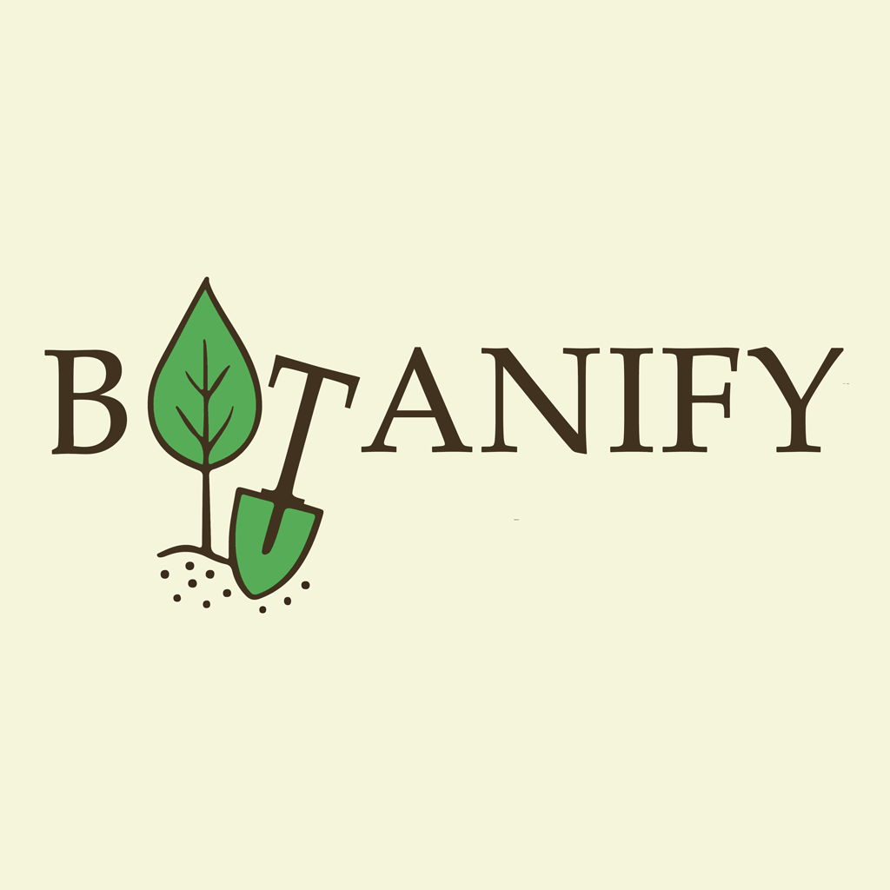

O mnie
Witaj! Mam na imię Julian i jako młody twórca graficzny pomagam markom wyróżnić się dzięki unikalnym i nowoczesnym logotypom. Każdy projekt traktuję indywidualnie i dopasowuję go idealnie do potrzeb Twojej marki.
Co mogę dla ciebie zrobić
- Logo podstawowe – czyste, minimalistyczne
- Logo z ikoną – symbol + nazwa marki
- Poprawki / redesign starego logo
Zobacz cennik!
Cennik
Pakiety:
Classic – 140zł
1 logo, 1 wariant, 1 modyfikacja, pełne prawaExclusive – 250zł
1 logo, 2 warianty, 2 modyfikacje, mockup, pełne prawaDo pakietu:
Dodatkowy wariant – 50złDodatkowa modyfikacja – 50zł
Dodatkowy mockup – 30zł
Jeśli szukasz czegoś innego, napisz do mnie!
Jak to działa?
- Napisz do mnie Mail / Discord / Instagram
- Ustalimy brief i Twoją wizję
- Przygotuję projekt i prześlę do akceptacji
- Otrzymasz gotowe pliki + pełne prawa
Portfolio



Logo firmy Buzzly - fikcyjnej agencji marketingowej w social mediach,
nazwa sugeruje tworzenie szumu wokół marki. Wybrałem logotyp w przyjaznej kolorystyce
i miękko zaprojektowany aby trafił także do młodszych odbiorców. Zastosowany został flat design
aby logo było uniwersalne oraz skalowalne. Pszczoła ma symbolizować pracowitość, energię.
Megafon odnosi się do marketingu, rozgłosu. Pioruny również stanowią nawiązanie do energii i
szybkości przekazywania informacji.



Logo firmy Botanify - fikcyjnej działalności zajmujacej się sprzedażą narzędzi ogrodniczych czy sadzonek.
Projektując logo zadbałem o to, by w literach zawarte były elementy ściśle związane z ogrodnictwem.
Uznałem, że sam symbol może być bezpośrednio wyciągnięty z napisu, ponieważ w tym przypadku dobrze to
ze sobą współgra i ułatwia klientowi skojarzenie firmy. Użyte zostały kolory zbliżone kojarzone właśnie z naturą.
Kontakt
Chcesz złożyć zamówienie lub zapytać o projekt?
- Discord: LogoGraphers
- Email: logograph.business@gmail.com